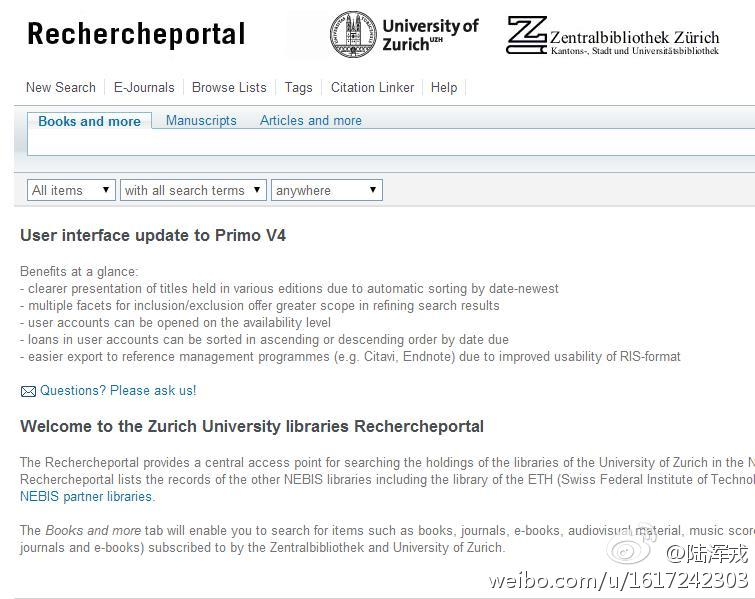

//@Alexx_Jiang:转发微博@陈光标:互联网时代的转型：化缘的改叫众筹了，算命的改叫分析师了，八卦小报改叫自媒体了，统计改叫大数据分析了，忽悠改叫互联网思维了，做耳机的改为可穿戴设备了，IDC的都自称云计算了，办公室出租改叫孵化器了，圈地盖楼改叫科技园区了，放高利贷改叫资本运作了，借钱给朋友改叫天使投资了。
Repost@陆浑戎:一组北京老照片，8张，大约在1889至1914年间，来自苏黎世大学的#Zurich University libraries Rechercheportal#，检索Peking，并将条件限制为在线资源和图像即可看到。该库整合了苏黎世大学和瑞士另几所高校的资源，内容很多，部分可在线获取，链接：网页链接 